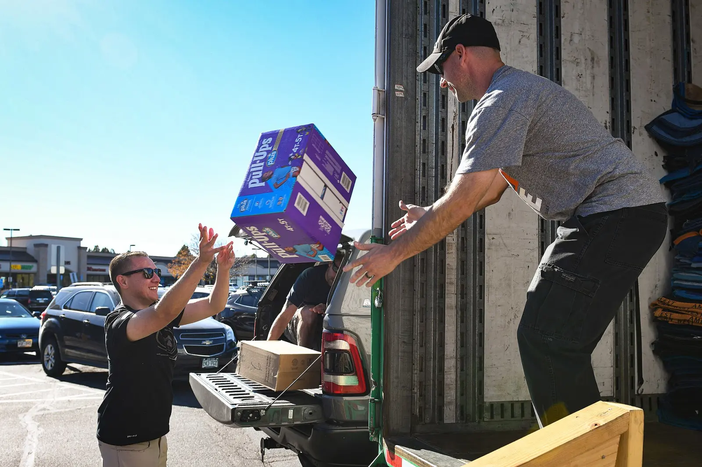
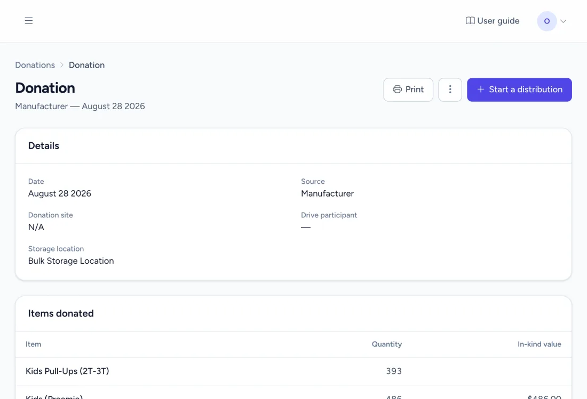
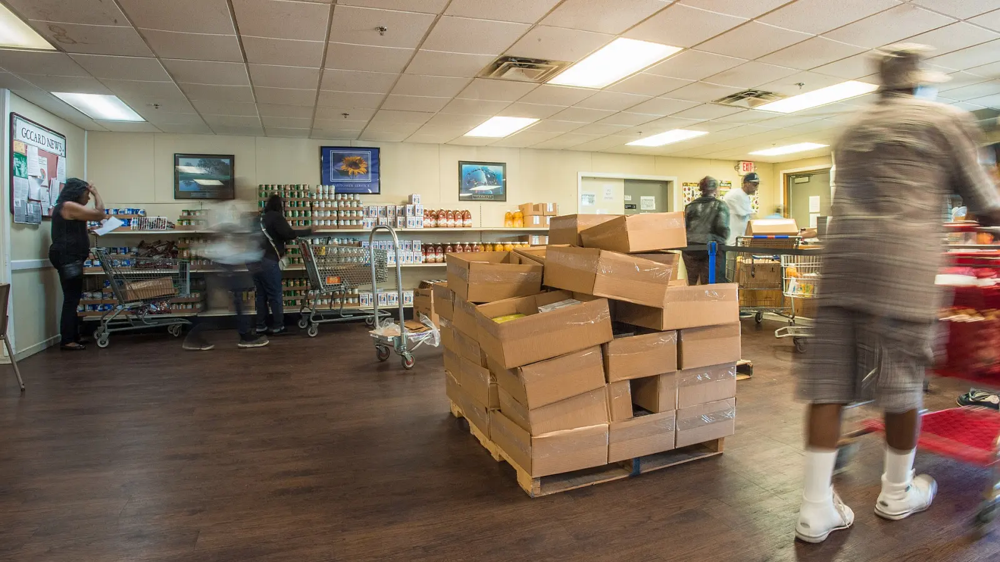
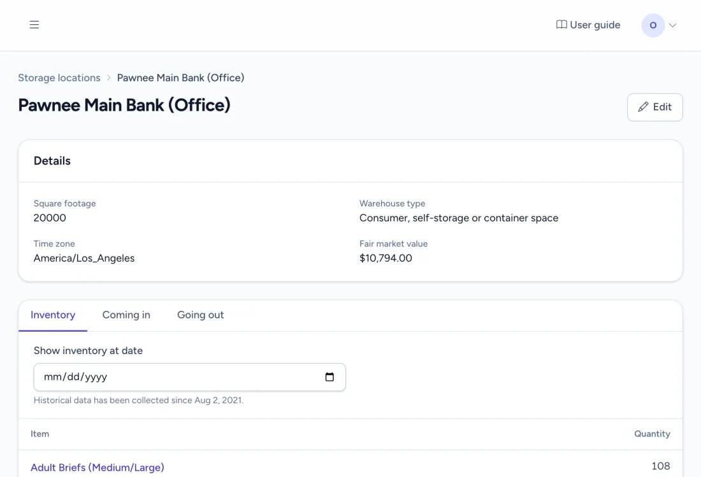
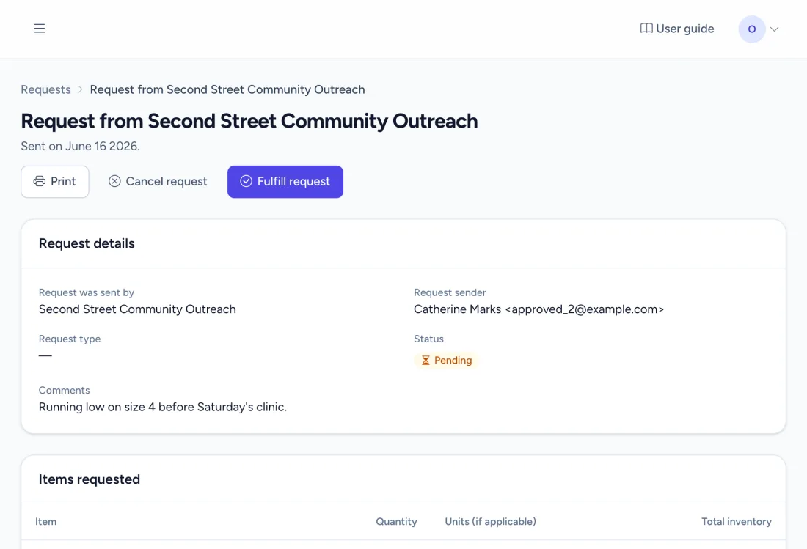
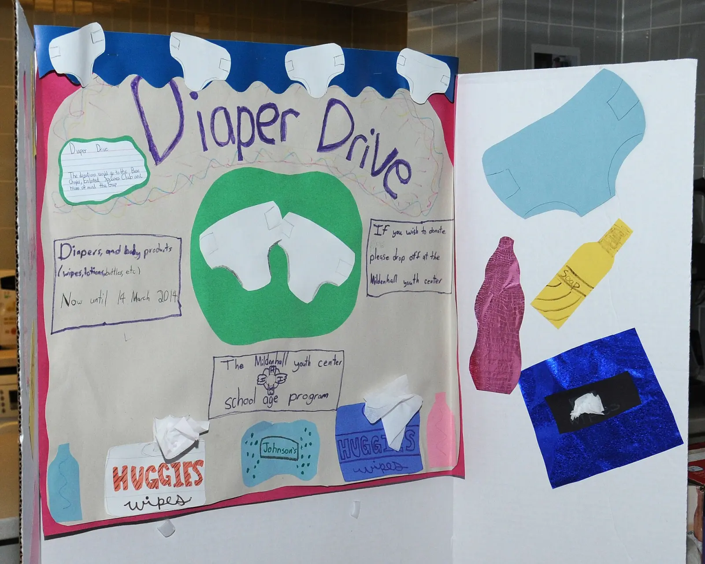

The easiest, most love-filled way to run your essentials bank.
Free inventory software for the people who get diapers and period supplies to families who need them. Less time counting boxes. More time for everything else.
Free for every bank, in association with the National Diaper Bank Network and the Alliance for Period Supplies.
- banks across the United States
- 200+
- children receiving diapers
- 3 million+
- people receiving period supplies
- 400,000+
- cost to a bank, ever
- $0
From the back of a truck to a baby's first week.
A box of diapers passes through a lot of hands. Human Essentials keeps count at each one, so nobody has to.
-


It comes in.
A donor's car, a product drive, a pallet you paid for. Record it once and it is on the shelf, with who gave it and what it is worth.
- Donations, purchases and product drives
- Scan the barcode on the box, or create your own
- In-kind value added up for you
-


It waits where you can find it.
Every storage location has its own count. Move stock between them, correct a miscount, and run an audit when you want to be sure.
- Transfers, adjustments and audits
- Kits built from the items you stock
- What was on the shelf on any past date
-

It goes to a family.
Partner agencies ask for what their families need through their own portal. You see each request beside your stock, send it out, and print the picklist.
- Invite, approve and recertify partners
- A calendar of pick ups and deliveries
- Eleven reports for your board and your funders
“Human Essentials has taken our diaper distribution to the next level. We no longer have to worry about how to track our incoming and outgoing inventory, and having all our products and data tracked in different ways in different documents and systems. Human Essentials has saved us time, money, energy and many, many headaches. The system is extremely intuitive and user-friendly and we are so grateful to have it.”
“Finally, an inventory management system designed specifically for the unique needs of diaper banks!”

Made by volunteers, the way your bank is.
Human Essentials is built by Ruby for Good, a non-profit whose volunteers write software for organizations doing good. It was first built alongside PDX Diaper Bank.
- Free, and hosted for you
- No license fee, no per-user price and nothing to install.
- Open source
- Every line is public under the MIT license. Read the code on GitHub.
- A digital public good
- Recognized by the Digital Public Goods Alliance.
What brings you here?
- I run an essentials bankYou collect diapers, period supplies or other essentials and give them out through partner agencies.Request an account
- I work at a partner agencyYour bank invites you. Use the email address the invitation was sent to.Log in
- I need diapers or period suppliesWe make the software banks use; we do not hand out supplies. A bank near you does.Find a bank near you
Questions banks ask first.
Is it really free?
Yes. There is no charge to any bank. Volunteers build it and Ruby for Good hosts it.
Who is it for?
Diaper banks, period supply banks and other essentials banks that give out supplies through partner agencies. You request an account, and we set your bank up.
I need diapers or period supplies. Can I get them here?
Not from us. We make the software that banks use. Find a bank near you, and it can tell you which local agencies give out supplies.
I work at a partner agency. How do I get in?
Your bank invites you. Once you accept the invitation, log in with that email address.
Can we bring the records we already have?
Yes. Partners, storage locations with their starting inventory, vendors and donation sites can each be imported from a spreadsheet.
Who can see our data?
Your bank's records belong to your bank, and other banks cannot see them. The privacy policy says what we keep and why.
Spend the afternoon on families, not spreadsheets.
Tell us about your bank and we will set up your account. Questions first? Write to info@humanessentials.app.
Request an account